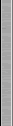
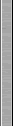

Llámenos: 902 21 51 21
Solicite más información: info@digi21.net
OrtoBatch
Aplicación todo en uno para la creación de ortofotos + ajuste radiométrico + mosaico + corte en hojas de las ortofotos resultantes.
Interface de usuario rápido e intuitivo, no consume memoria, soporta diferentes algoritmos de ajuste radiométrico, admite múltiples formatos de archivos de entrada, múltiples formatos de archivos de georeferenciación...
Se adapta al método de trabajo de cada empresa, permitiendo especificar independientemente directorios con fotografías a rectificar, directorio con los archivos de modelos digitales del terreno, directorio de salida, permite paremetrizar independientemente cada imagen (tamaños, porcentajes de solape...)
|  |  |